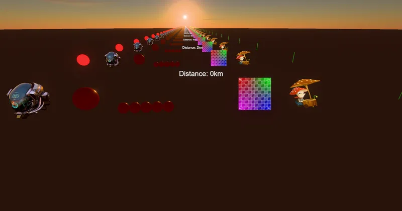

3D > Lighting & Environment > SkyBox & IBL > SkyAtmosphere
Material Scattering (Aerial Perspective) - RedGPU WebGPU Example
Compares distance-based aerial perspective across various materials.
거리에 따른 대기 산란(공중 투시) 효과가 재질에 미치는 영향을 비교합니다.

3D > Lighting & Environment > SkyBox & IBL > SkyAtmosphere
Compares distance-based aerial perspective across various materials.
거리에 따른 대기 산란(공중 투시) 효과가 재질에 미치는 영향을 비교합니다.
